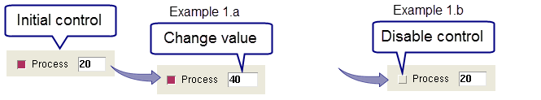
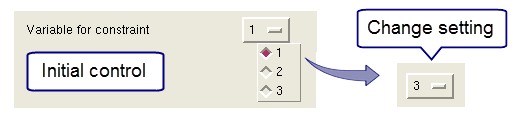
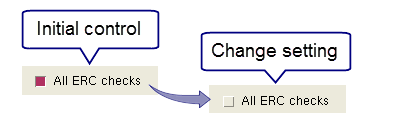
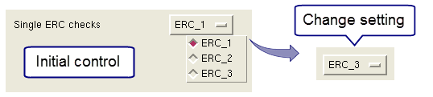

*cmnCustomFileOverrideValues: {controlType tool nameType name select value} …
The type of customization control.
Allowed values: DEFINE VARIABLE CHECK
The Calibre Interactive application that is running.
Allowed values: DRC LVS PERC PEX DFM 3DSTACK
Parameter set that specifies the control name and naming method.
nameType — Specifies naming method for the control.
Allowed values of nameType: name prompt choices
name — Specifies the name.
The values of nameType and name are determined with the following logic:
1. If the control was created with the ‑name option, nameType is set to name and name is the value of the ‑name option.
2. Else if the control was created with the ‑prompt option, nameType is set to prompt and name is the value of the ‑prompt option.
3. Else the control was created with the ‑choices option, and nameType is set to choices and name is the value of the ‑choices option.
For DEFINE and VARIABLE controls, name is the only possible value for nameType.
Gives the on/off (or select) state of the Boolean checkbox. If no checkbox is displayed for the control, the value is 1.
The current setting of the control. This can be the selection from the ‑choices list or the entry in the text field. An empty string is indicated with braces ({}).
The following custom control:
CUSTOM::DEFINE -name process -prompt "Process" -choices {""} -initval 20results in the control shown below:

1.a. Change value — If you change the assigned value for the control, then save the runset, the runset has this entry for the customization override option:
*cmnCustomFileOverrideValues: {DEFINE DRC name process 1 40}1.b. Disable control — If you disable the checkbox, then save the runset, the runset has this entry for the customization override option:
*cmnCustomFileOverrideValues: {DEFINE DRC name process 0 20}The following custom control:
CUSTOM::VARIABLE -name "var_constraint" \
-choices { 1 2 3} -prompt "Variable for constraint"results in the control shown below:

If you select a different choice from the list, then save the runset, the runset has this entry for the customization override option:
*cmnCustomFileOverrideValues: {VARIABLE DRC name var_constraint 1 3}The following custom control:
CUSTOM::CHECK -name all_erc -prompt "All ERC checks" -tool LVS results in the control shown below:

If you unselect the control, then save the runset, the runset has this entry for the customization override option:
*cmnCustomFileOverrideValues: {CHECK LVS name all_erc 0 all_erc}The following custom control:
CUSTOM::CHECK -choices {ERC_1 ERC_2 ERC_3} \
-prompt "Single ERC checks" -tool LVS results in the control shown below:

If you select a different choice from the list, then save the runset, the runset has this entry for the customization override option:
*cmnCustomFileOverrideValues: {CHECK LVS prompt {Single ERC checks}
1 ERC_3}where nameType is given the value prompt in cmnCustomFileOverrideValues.
Alternatively, if the control is created without the ‑prompt option, as follows:
CUSTOM::CHECK -choices {ERC_1 ERC_2 ERC_3} -tool LVS Then nameType is given the value choices in cmnCustomFileOverrideValues, as shown here:
*cmnCustomFileOverrideValues: {CHECK LVS choices {ERC_1 ERC_2 ERC_3}
1 ERC_3}